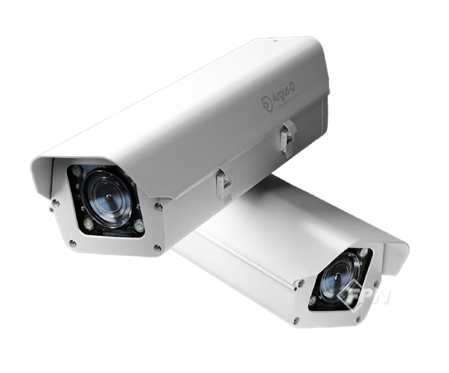
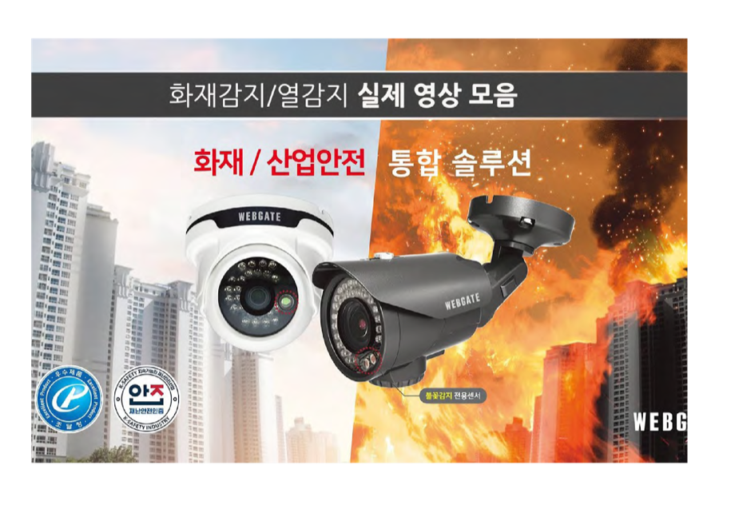
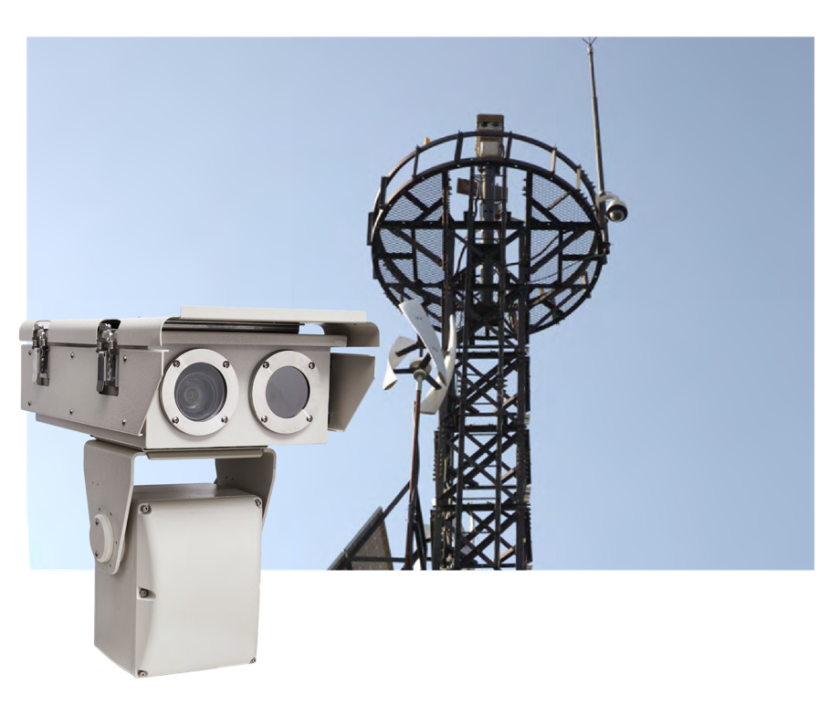
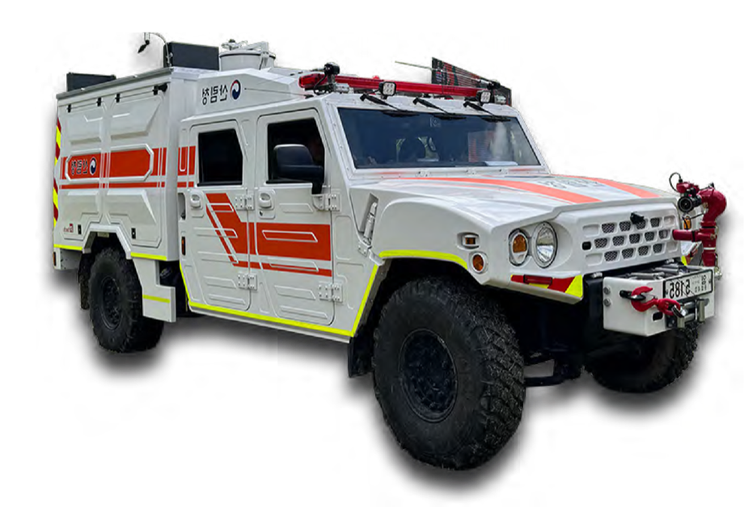
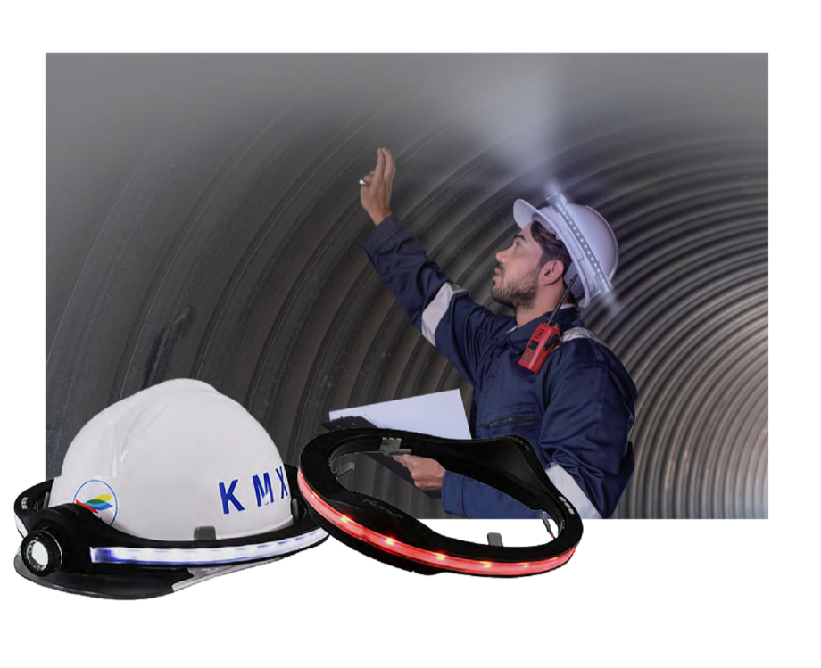

앞서 ‘재난안전 실험실’에서 다룬 가상의 산불 발생 시나리오는 초기 발견과 신속한 대응이 피해 규모를 좌우하는 핵심 변수다. 이에 산불·화재를 미리 감지하고 신속하게 진화하기 위한 다양한 안전 기술이 개발되고 있다. AI 영상분석과 열화상 센서를 결합한 감지 기술부터 현장 대원의 시야를 확보하는 장비, 험지까지 진입할 수 있는 진화 차량까지. 이번 호에서는 이러한 대응의 공백을 메울 수 있는 산불·화재 대응 기술과 제품을 소개한다.
카메라 한 대가 불꽃과 떨림을 동시에 읽는다
영상인식 기반의 화재감지 기능을 보유한 CCTV㈜아이아이에스티
일반 CCTV와 똑같이 보이지만 내부에는 다양한 감지 기술이 담겨 있다. 아이아이에스티의 이 카메라는 카메라 센서가 촬영한 영상을 임베디드 모듈*과 FPGA**로 먼저 처리한 뒤, GPU 기반 인공지능이 영상을 분석해 화재와 연기를 감지한다. 동시에 내장된 3축 가속도·지자계 센서를 통해 진동과 지진까지 감지할 수 있다. 이상 징후가 포착되면 관리자의 스마트폰으로 즉시 알림을 전달한다. 사람이 상주하기 어려운 지역이나 외진 산업시설에서 방범과 재난 감지를 한 번에 수행할 수 있다는 점이 특징이다. 이 기술은 2026년 CES 혁신상을 수상하기도 했다.
*임베디드 모듈: 특정한 목적(예: 영상 처리, 통신, 제어 등)을 수행하기 위해 하드웨어와 소프트웨어를 하나의 작은 기판이나 칩 형태로 통합해 놓은 장치
**FPGA(Field Programmable Gate Array): 사용자가 목적에 맞게 내부 회로를 직접 프로그래밍(수정)할 수 있는 반도체 칩

불꽃의 파장을 읽어 오작동 없이 잡아낸다
불꽃감지 센서 및 카메라를 적용한 원격 모니터링 CCTV웹게이트
연기나 영상 패턴 분석만으로는 안개나 역광으로 인해 화재를 놓칠 가능성이 있다. 웹게이트의 이 제품은 불꽃 고유의 광학적 파장을 감지하는 센서와 실화상 카메라를 하나로 결합했다. 별도의 서버 없이 카메라 한 대만으로 영상 감시와 화재 감지를 동시에 수행할 수 있다. 감도와 감지 시간을 설치 환경에 맞춰 조정할 수 있어 비화재보를 최소화하고, 화재가 감지되면 원격지 관제센터와 담당자의 모바일 기기로 즉시 알람을 전송한다. 이 기술은 화재에 민감한 첨단 소재 기업의 현장에도 도입됐다.

5km 밖 불씨를 9초 만에 찾아낸다
복합 영상기반 화재감지시스템㈜창성에이스산업
광활한 산림에서는 얼마나 멀리, 얼마나 정확하게 화재를 감지할 수 있는지가 관건이다. 창성에이스산업의 이 시스템은 적외선 카메라와 딥러닝 CCTV를 결합해 좌우 355도로 자동 회전하며 온도 데이터를 분석한다. 직선거리 5km 밖의 작은 화원도 9초 이내에 감지하고, 최대 10km에 이르는 넓은 지역을 하나의 시스템으로 감시할 수 있다. 영상의 형태와 패턴, 색상까지 분석하는 딥러닝 알고리즘을 적용해 안개나 역광 상황에서도 비화재보를 줄였다. 화재 위험도가 높은 구역을 최대 10곳까지 지정해 집중 관리할 수 있으며, 산불 감시초소와 공항 등 전국 각지에 설치됐다.

달리면서도 물을 뿌리는 산악용 진화차
다목적 산불전문진화차㈜에프원텍
산불은 대부분 소방차가 접근하기 어려운 산악과 험지에서 발생하거나 확산된다. 에프원텍의 이 진화차는 FRP(섬유강화플라스틱) 소재의 소화수조와 소방펌프, 급수펌프를 한 차체에 탑재해 험지에서도 안정적인 방수 작업을 지원한다. 범퍼에 장착된 자동 방수총과 차체 보호용 분무장치를 활용하면 차량이 이동하는 중에도 물을 뿌릴 수 있어 초기 진화에 신속하게 투입할 수 있다. 야간조명장치도 갖춰 시야 확보가 어려운 야간 현장의 대응을 돕는다. 소화·급수·조명 기능을 하나로 통합해 산림청과 전국 소방본부, 산불진화대 등에서 활용되고 있다.

연기 속에서도 360도, 길을 비추는 안전모 조명
재난대피용 전방향 조명장치㈜케이엠엑스
화재로 정전과 연무가 동시에 발생하면 시야 확보가 생존을 좌우한다. 케이엠엑스의 VEGA-K는 안전모에 장착하는 360도 전방향 조명장치다. 스위치 하나만 누르면 최대 밝기로 주변을 비춰 착용자가 여러 요구조자를 이끌고 신속하게 대피할 수 있도록 돕는다. 줌 조절 렌즈를 적용해 필요에 따라 조사 범위를 좁히고 원거리까지 비출 수도 있다. 연기가 자욱한 산불 현장에서도 진화대원의 시야 확보를 돕고 동료와 대피로를 확인할 수 있어 실내 재난뿐 아니라 야외 화재 현장에서도 활용할 수 있다. 최대 50시간 사용할 수 있는 교체형 배터리와 방수·방진(IP65) 설계를 갖춰 발전소, 터널, 광산 등 다양한 현장에서 활용된다.

더 많은 재난안전인증·지정 기술과 제품을 확인하고 싶다면?
안전산업 24 바로가기